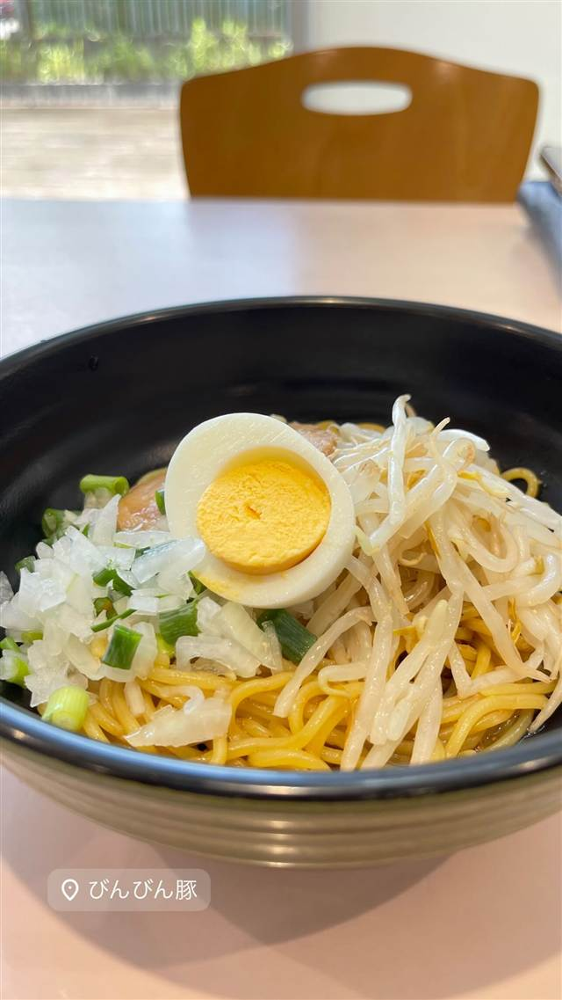

ラーメン · まぜそば・油そば · 戸田
びんびん豚 戸田総本店
伝説の二郎系店の立ち上げメンバーが手がける汁なし油そば
びんびん豚
埼玉・戸田にある、閉店した伝説の二郎系名店『モッコリ豚』の立ち上げメンバーが手がける一軒。自家製の平打ち麺と無料トッピングをカスタマイズして楽しむ『汁なし』が看板で、初心者には『全マシ』が定番の頼み方。
TRIVIA
豆知識
- 名物『ローング炙りチャーシュー』は別注文で楽しめる
- 混ぜる過程で味の完成度が上がるよう設計された汁なしが看板
REVIEWS
世間の評判
92.1ラーメンDB3.45食べログ
乳化スープの旨味とミスの指摘
- ド乳化したこってりスープと豚骨の旨味の強さを評価する声が多い
- ニンニクやアブラなどトッピングの入れ忘れといった提供ミスを指摘する声もある
- 以前より価格が上がっていることに気づいたという声もいくつかある
ラーメンデータベース 口コミ222件・最新 2026-08
| 系譜 | 閉店した伝説の名店『モッコリ豚』の立ち上げメンバーが独立して開いた店 |
|---|---|
| 看板 | 汁なし（油そば・まぜそば系、1,000円） |
| こだわり | 自家製の平打ちストレート麺、ヤサイ・ニンニク・アブラ・辛み・揚げエビ・マヨなど無料トッピングが充実した二郎インスパイア系のカスタマイズ |
| どこから | 23区の外れ・近郊 |
| 営業時間 | 月 11:30-14:30、18:00-21:00 火 休み 水〜日 11:30-14:30、18:00-21:00 |
| 予算 | 昼 ～¥999 夜 ～¥999 |
| 定休日 | 火曜 |
| 予約 | 予約不可 |
| 場所 | 戸田 埼玉県戸田市新曽1021 |
| メモ | 迷ったら『全マシ』が定番の楽しみ方 |
食べたもの：油そば
ひとりで入りやすい
OFFICIAL
店からの知らせ
その日の限定や臨時の休みは、店のXに出ます。
NEARBY
近い店・同じ系統の店
-
 ★
まぜそば・油そば 本郷三丁目
中華蕎麦にし乃
メニューは2種類のみ、生姜香る肉厚ワンタン入りの中華そば
昼 ¥1,000～¥1,999 夜 ¥1,000～¥1,999
★
まぜそば・油そば 本郷三丁目
中華蕎麦にし乃
メニューは2種類のみ、生姜香る肉厚ワンタン入りの中華そば
昼 ¥1,000～¥1,999 夜 ¥1,000～¥1,999
-
 ★
まぜそば・油そば 亀戸駅
しののめヌードル
淡海地鶏と干し椎茸出汁、手もみ自家製麺の油そば
昼 ¥1,000～¥1,999 夜 ¥1,000～¥1,999
★
まぜそば・油そば 亀戸駅
しののめヌードル
淡海地鶏と干し椎茸出汁、手もみ自家製麺の油そば
昼 ¥1,000～¥1,999 夜 ¥1,000～¥1,999
-
 ★
まぜそば・油そば 亀戸
DURAMENTEI（ドゥラメンテイ）
白醤油と黒醤油、選べる2種スープと自家製ワンタン
昼 ¥1,000～¥1,999 夜 ¥1,000～¥1,999
★
まぜそば・油そば 亀戸
DURAMENTEI（ドゥラメンテイ）
白醤油と黒醤油、選べる2種スープと自家製ワンタン
昼 ¥1,000～¥1,999 夜 ¥1,000～¥1,999
-
 ★
まぜそば・油そば 稲荷町
さんじ
豪州でお好み焼き店を営んだ店主の自家焙煎煮干しラーメン
昼 ～¥999 夜 ¥1,000～¥1,999
★
まぜそば・油そば 稲荷町
さんじ
豪州でお好み焼き店を営んだ店主の自家焙煎煮干しラーメン
昼 ～¥999 夜 ¥1,000～¥1,999
-
 ★
まぜそば・油そば 東中神
自家製麺 まさき
水の綺麗な昭島を選んで出した二郎系の汁なしまぜそば
昼 ～¥999 夜 ～¥999
★
まぜそば・油そば 東中神
自家製麺 まさき
水の綺麗な昭島を選んで出した二郎系の汁なしまぜそば
昼 ～¥999 夜 ～¥999
-
 ★
まぜそば・油そば 武蔵境駅
珍々亭（珍珍亭）
1957年創業で油そば発祥の一店とされ、先代考案の拌麺ヒントのレシピが残る
昼 ～¥999 夜 ～¥999
★
まぜそば・油そば 武蔵境駅
珍々亭（珍珍亭）
1957年創業で油そば発祥の一店とされ、先代考案の拌麺ヒントのレシピが残る
昼 ～¥999 夜 ～¥999